En un universo lleno de estrellas...
...tuviste que aparecer tú.
Y desde entonces...
...mi universo cambió para siempre.
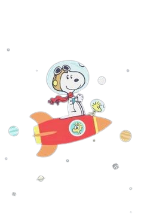
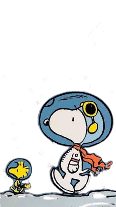
Nuestro
Universo
Capitulo 1: El comienzo
Aún sin saberlo en ese momento, estábamos a punto de comenzar esta pequeña historia de amor que vivimos hoy.
Lit, lo recuerdo como si hubiera sido ayer —aunque esa frase esté demasiado usada—. Yo estaba en esa feria, prácticamente obligado por Enrique, sin saber ni para que fui. Y justamente ese día me viste a mí y, aunque tímida, tuviste el valor de pedirme el Instagram dizque para ser amigos. (Bueno, no fuiste tú directamente, fue tu amiga... pero tú la mandaste, así que es lo mismo).
Y míranos aquí, celebrando más de un año desde aquel día y ya siendo novios.
Y lo sé, sé que no te gusta celebrar tu cumpleaños, y mucho menos recibir regalos. Pero realmente quería hacerte esto. Quizás, en el momento en que estoy escribiendo esto, solo hayan pasado dos días —de hecho, cuando me preguntaste qué hacía ayer, era esto—, pero pienso pasar toda la semana hasta llegar a tu cumpleaños perfeccionando cada detalle.
Porque vale la pena cada cosa que haga por ti. Te mereces todo esto y muchísimo más.
Volviendo al tema... ¿Recuerdas cuando hablábamos casi todos los días? Tú me dabas consejos y yo te escuchaba todo lo que decías (que siempre ha sido bastante). Porque yo sí recuerdo, LOL.
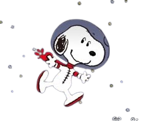
Desde el inicio siempre me caíste bien, aunque al principio no pensaba en ti como algo más que una amiga. Pero poco a poco empezaron a llegar las señales... casi señales de humo y todo, de ambas partes. Aunque, siendo honestos, las tuyas eran un poquito más obvias.
(Perdona si me salto algunas partes). O también aquel momento en el que me invitaste a tu graduación sin siquiera habernos visto, creo que ni una sola vez, de forma presencial. Y, para colmo, el día que me ibas a llevar las entradas, yo ni siquiera estaba en mi casa y tuviste que esperar a mi hermana y todo.
Todavía me da risa cómo mi hermana me contó cómo eras al principio. Me dijo algo como: “Ella no paraba de preguntar por ti”, mientras su tía (o mamá, no recuerdo) le decía que se calmara. Y tú ahí, queriendo saber dónde estaba, cómo estaba y todo.
Y esas señales que eran hasta medio obvias, yo me di cuenta de muchas aunque alegaba ignorancia.
Pero yo seguía ahí, jurando que no, que no era cierto. Me hablabas de otras personas de tu liceo y yo decía: “Naaah, imposible que yo le guste. Me lo estoy imaginando”.
También están esas veces que venías a mi casa con tu mamá (btw, hola, suegrita, ¿cómo está? ♡) y tu hermana, a dar vueltas por ahí en la plaza, hasta que por fin teníamos un pequeñito momento a solas para poder hablar cómodamente.
Pero no nos saltemos partes, porque yo también fui a tu casa a conocer y ver dónde vivías. Y, por cierto, en uno de esos viajes para allá fue donde nos dimos uno de los primeros, si no es que el primer abrazo bien fuerte y el primer beso.
Yo iba con la intención de ver los animalitos, pero unos días antes me dijiste que ya se habían llevado los que quedaban. Aun así, fue bien entretenido bajar y ver todo junto a ti. Y también recuerdo cuando subimos al techo y nos tiramos no sé cuántas fotos (que todavía siguen por ahí rondando en nuestro chat).
Ese día de las fotos yo estaba con una camisa crema, unju, y tú con un polo de Rosita Fresita. Si no estoy loco. JAJAJA.
Yo voy recordando las cosas a pedazos, pero okay. También está ese momento en el que me estabas ayudando con un logo de EMASTECH, desde los colores hasta la tipografía y todo lo demás. Lit, con todo. Que, por cierto, no sé dónde quedó esa cuenta.
Tú ni dudabas en ayudarme con nada. Tremendo.
Pero volvamos a la línea temporal principal, ¿va? Porque esto ya se está haciendo muy largo. JAJAJA.
Un 9 de octubre, durante una de esas llamadas que hacíamos de vez en cuando —que incluso tengo hasta destacado el mensaje del día que me lo recordaste—, me dijiste “te amo” por primera vez.
No podiamos creerlo ninguno de los dos, eso era amor y amor KAJAKJAKJ.
Entonces así siguieron pasando los días, conociéndonos más y más. Tú venías para acá y yo iba para allá; pocas veces salíamos a otros lugares. Luego me tocó a mí invitarte a mi graduación de inglés, donde te autocontrataste como fotógrafa y filmmaker. Me dieron una de las tantas medallas que tengo por ahí, pero esa es, sin duda, la del recuerdo más bonito, porque tú estabas presente en el momento en que me la dieron.
Luego de ahí fuimos a tu lugar favorito a comer tu comida favorita... Taco Bell. KJAKAJKJ. Mentiras, al McDonald's. Te pedimos tu Big Mac y estabas toda tímida (tanto que hablas y dizque tímida) mientras te preguntaban de todo y yo intentaba calmarte.
Yo me acuerdo. Yo me acuerdo. Todavía tenía mis lentes cuando pasó ese suceso, para que veas lo mucho que recuerdo. JAJAJA.
Luego pasó aún más tiempo. Hablamos muchísimo desde ese momento hasta acá, yo teniendo que esperar ese visto bueno tuyo para poder ser novios oficialmente. Y cuando por fin me lo diste, me puse manos a la obra para hacer que ese momento fuera algo que no se pudiera olvidar fácilmente.
Busqué un parque bien bonito y pedí la combinación de flores que más te gustan: rosas y girasoles. Y llegó ese día: el 26 de enero de 2026. Que, en realidad, fue el 25, pero a nadie le gusta el 25 porque es impar.
Nos la pasamos chiquibomba. Dimos vueltas, nos sentamos, nos besamos, llovió... pero lo más importante, y por lo que realmente fuimos allá, aunque tú no lo sabías, fue que nos hicimos novios oficialmente.
¡QUE EMOCIÓN!
A partir de ese momento, la historia se cuenta sola.
Te adoro, estrellita. ♡
Capitulo 2: Una Carta
Para tú
Hola, mi amor. ¿Cómo estás? Se supone que estás leyendo esto después del primer capítulo, eso espero. No escribí todo eso para que no lo leas, jeje. Pero bueno...
Aquí van mis palabras, las cuales espero que no sean demasiadas porque ya leíste bastante, pero sí quiero que sientas que son de corazón, porque lo son.
Ay, como es costumbre, no sé por dónde comenzar una carta para ti. Hay tanto que quisiera decirte que no encuentro las palabras correctas, pero vamos por partes.
Primero, gracias. Gracias por haberme elegido entre tantas personas que existen en el mundo, o más bien, entre todas las personas que existían en ese momento. Agradezco que me elijas cada mañana al despertar, al pensar en mí, por permitirme estar en tu mente y en tu corazón en cada momento.
Realmente aprecio que seas tú y no alguien más, porque de no ser así, no habría podido conocer a la persona que eres actualmente, ni tampoco habría podido descubrir en quién te convertirás en el futuro. Porque sí, aspiro a ser parte de ese futuro.
Y te preguntarás (si no lo haces, hazlo): “Según él, ¿qué persona soy?”. Así que bueno, te responderé...
Eres la persona más maravillosa que he conocido. Eres increíble en todo lo que te propones; cada meta que te planteas buscas la manera de lograrla. Y aunque a veces puedan afectarte las cosas que te dicen, tarde o temprano logras superarlo como toda una leona.
Yéndonos más a lo sentimental, eres una persona que, aunque a veces intente ocultarse detrás de esa personalidad de persona seca —supuestamente—, tiene un lado súper cariñoso, amable, sensible y lleno de amor para dar.
Y realmente me siento afortunado de ser de los pocos que pueden llegar a ver esa parte de ti que, aunque la tienes bien escondida, con la persona correcta se vuelve tu verdadero yo.
El verdadero objetivo de esta carta es recordarte lo bien que me hace tenerte a mi lado. Con simplemente pensarte ya me lleno de alegría. Ya no podría imaginarme un día sin escribirte, sin mi estrellita. Imagínate dizque despertarme y no ver ese “ola amol” en la mañana... me da una vaina.
Y bueno, no se te olvide que eres uno de mis mayores impulsos para ser mejor cada día, para seguir creciendo y poder ser la persona ideal para ti. Aunque tú digas que ya lo soy, quiero que nunca sientas que te falta amor. NUNCA.
Mi meta es hacerte sentir segura, amada, deseada y darte paz siempre. Quiero que sepas que mientras esté a tu lado, voy a hacer todo lo que esté en mis manos para cuidarte y para que nunca tengas que dudar de lo mucho que te quiero.
Para terminar, solo quiero decirte que pienso seguir creando recuerdos en diferentes lugares, viviendo nuevas experiencias y descubriendo cosas, pero siempre con la persona que amo a mi lado: tú.♡
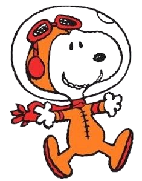
Capitulo 3: Nuestra historia

La Feria - Donde todo Comenzó...

Nuestra Primera Conversacion...

Yo sin conocerte bien, pero no faltaba a un party...

Uno de esos dias que recuerdas con cariño...

Ese momento donde estuvimos solos un rato...

9 de Octubre...
Tú de fotógrafa en mi grad...

25 de Enero♡...
El comienzo de Nosotros♡
Capítulo 4 — Nuestra galaxia
Presiona una, para ver de cerca
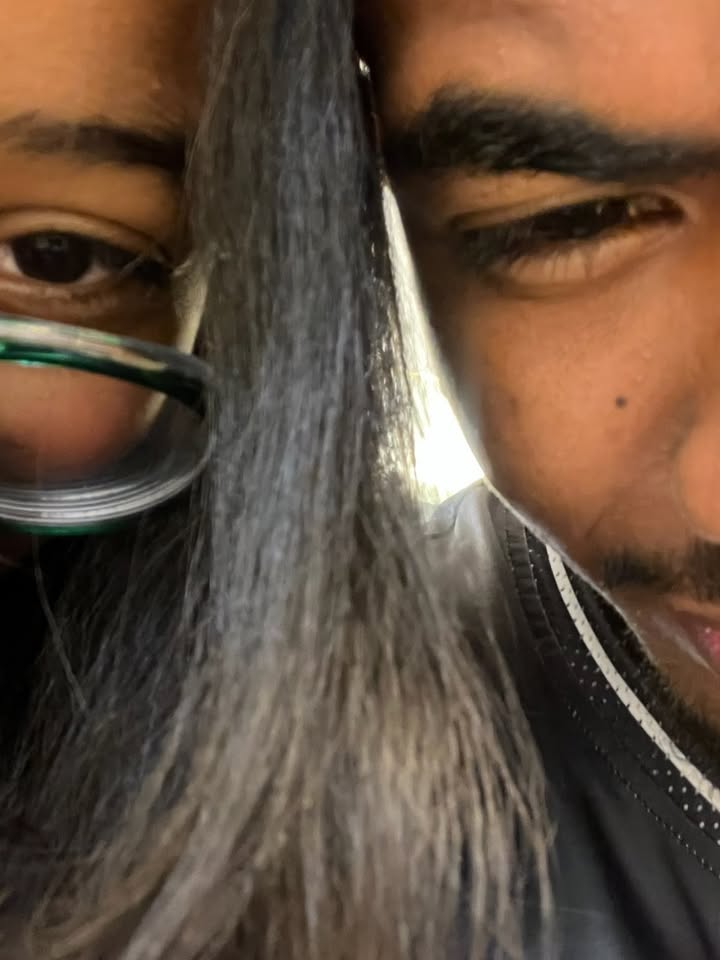
Tú haces bonito cualquier día.
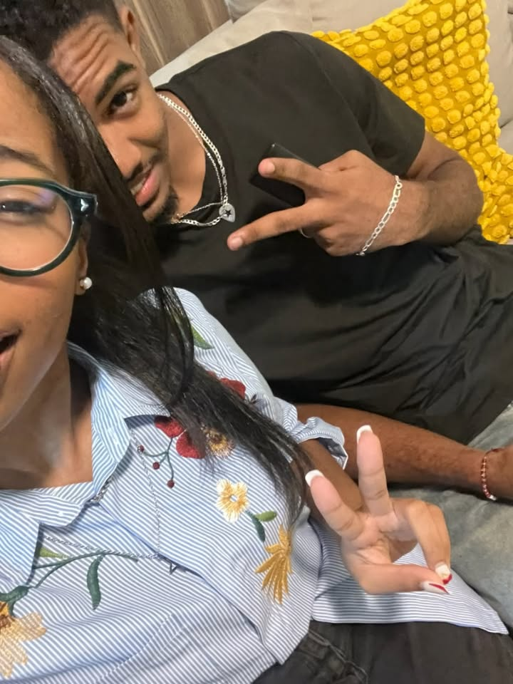
Mirale los deditos chuecos
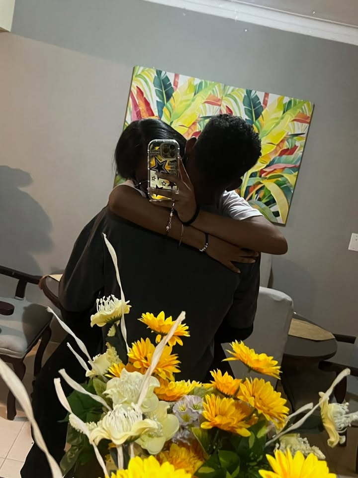
¿Quiénes son esos dos? JAJAJA.
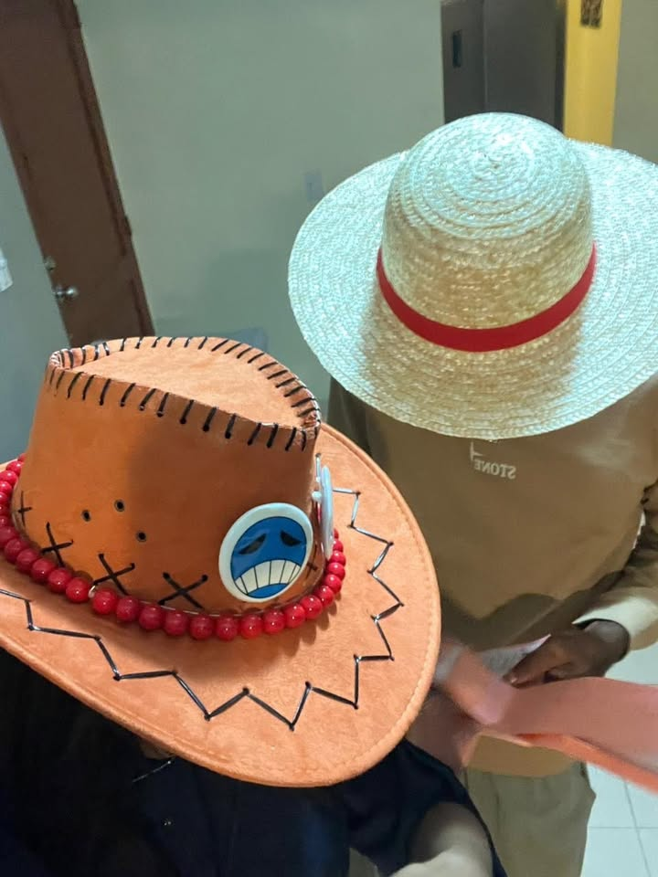
Capitana, lista?
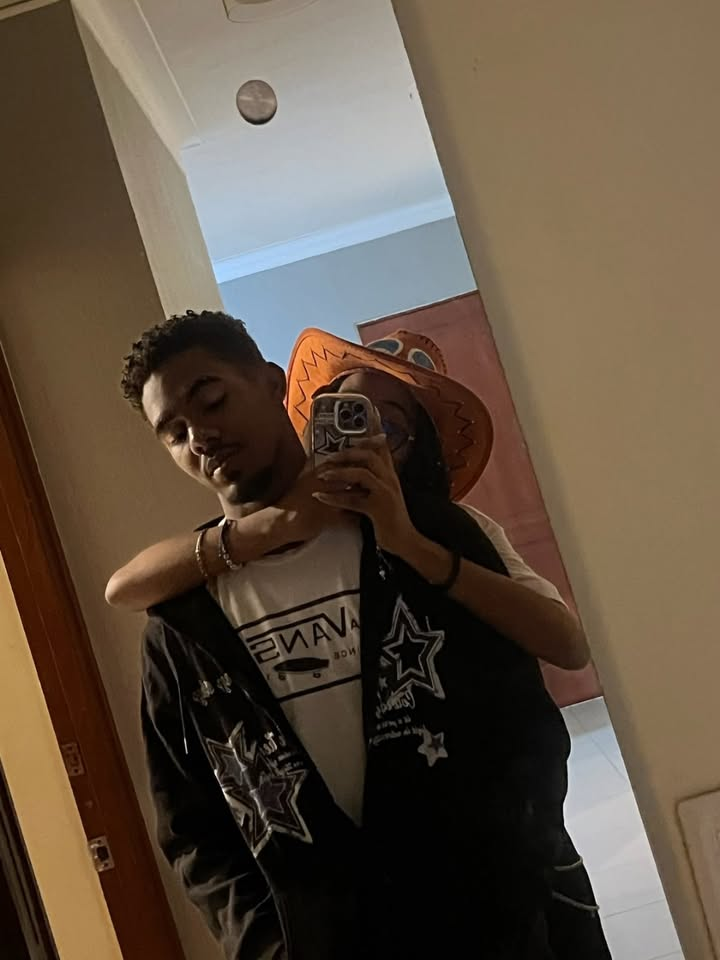
Yo estaba como durmiendome, viste?
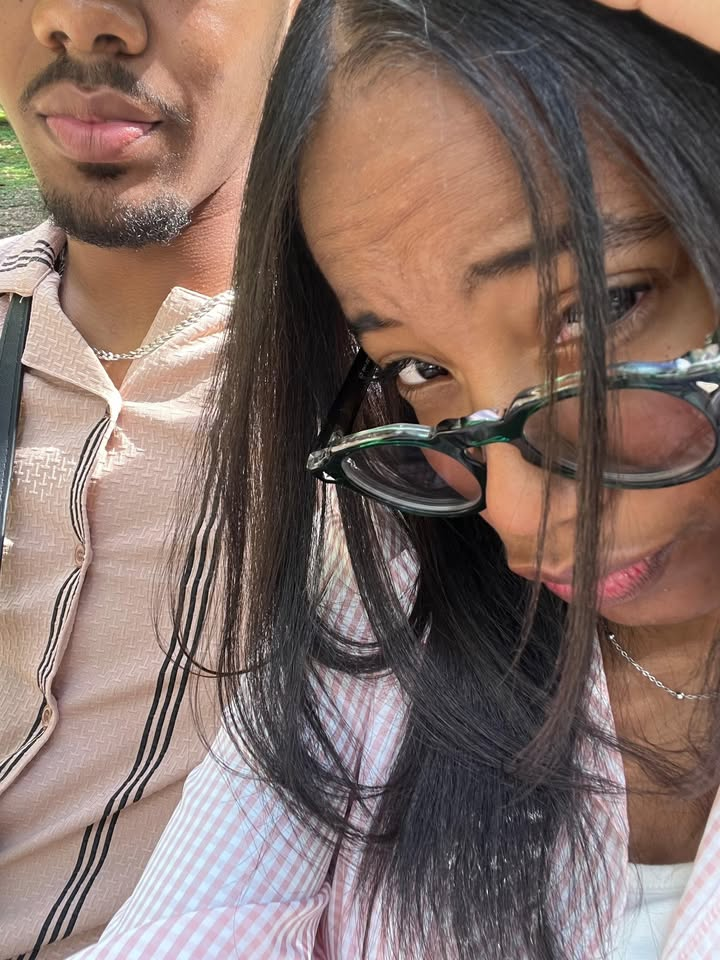
Unju, qué lindos nosotros.
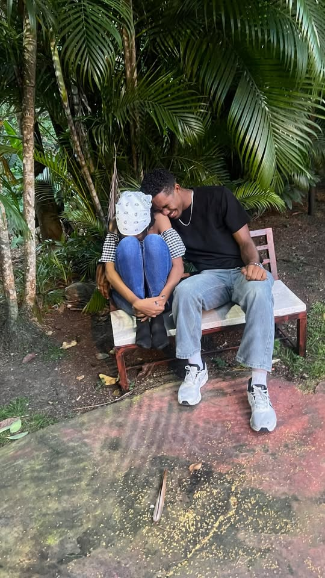
SE REIAN.
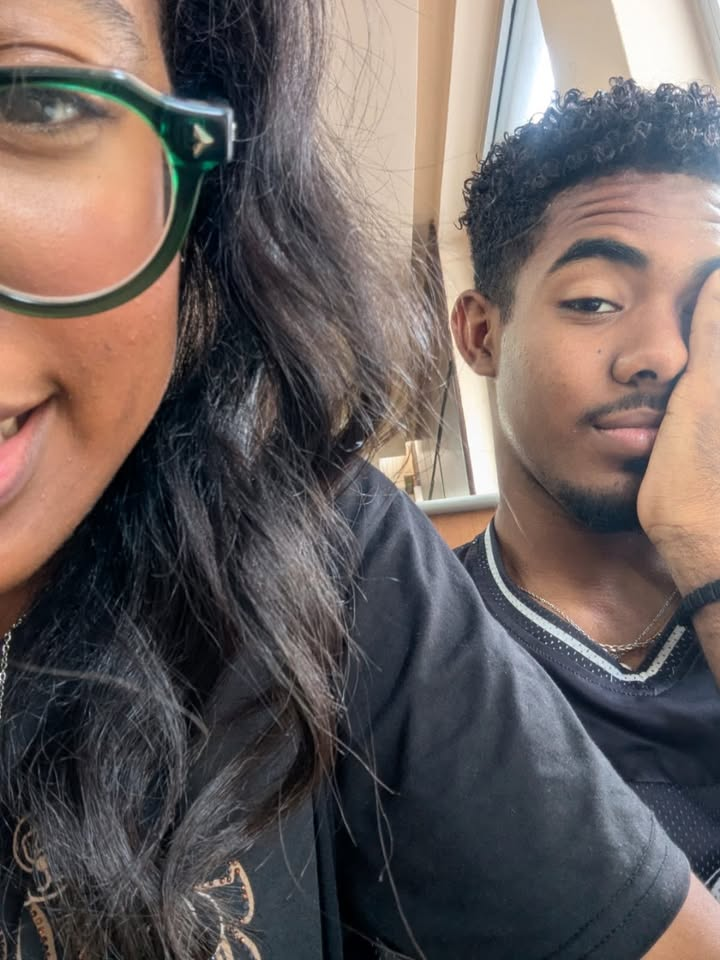
Tú y yo. ♡
Capítulo 5 — Lo que más amo de ti
Toca las estrellas, tienen algo que decirte...
Capítulo 6 — Nuestras canciones
The hills
 arrow_back
play_circle
arrow_forward
arrow_back
play_circle
arrow_forward
0:00
0:00
Elige alguna para terminar, utiliza (M) para reactivar la musica ambiental.
Capítulo 7 — El futuro
Hola, jeje. Aquí estamos de nuevo, ahora para hablar del futuro.
Entonces, continuando con lo que hablamos al final de la carta...
Sí... Yo no estoy seguro de muchas cosas actualmente. No sé qué voy a cenar hoy, no sé qué haré mañana, no sé cómo terminará este año...
Pero también hay cosas de las que sí estoy seguro. Bastante seguro.
Estoy seguro de que quiero seguir conociéndote, seguir escuchándote, seguir siendo parte de ti, porque aunque ya tenemos un tiempecito, nunca es suficiente tiempo cuando es con la persona que amas de verdad. Siento que todavía hay demasiadas cosas por descubrir de cada uno, tantas cosas que quedan por decirnos y tantos chistes malos que todavía tienes que aguantarme.
Estoy bastante seguro de que quiero formar parte de tus logros y felicitarte por cada uno de ellos, estar ahí para apoyarte y acompañarte en tus momentos bajos, y ser tu paño de lágrimas siempre que lo necesites.
Quiero seguir escuchando todos tus Story Times, como cuando le diste promoción a la doñita que vende empanadas o cuando tu compañera de inglés quería con el profesor y se ponía a exagerar para que le hicieran caso. También quiero seguir escuchando tus ideas, tus problemas y todas esas cosas random que te pasan y que te hacen ser tú. Esas que comienzan con un: “Oye, lo que me pasó hoy...” y terminamos hablando de eso durante todo el día.
Quiero seguir descubriendo y pasilleando lugares contigo. Ver lugares súper raros, comer cosas nuevas y extrañas, verte tomando fotos de todo y, en algún momento cualquiera, decirte: “¿Recuerdas tal día? Mándame esa foto, porfa, amorcito”.
Quiero viajar contigo.
Quiero ir a esos lugares que mencionamos de vez en cuando, hacer realidad esos momentos en los que te digo: “Vámonos de escapada a Suiza”. Ir a Japón para andar por ahí sin saber muy bien qué hacer, pasar por Estados Unidos para secuestrar un mapache o ir a darnos un par de golpes con canguros en Australia. Considero que sería bastante cool.
Quiero ver cuánto evolucionamos y cambiamos con el pasar de los años. Es bastante emocionante de cierto modo. Tú y yo vamos a ser otras personas en un par de años, imagínate. Vamos a tener nuevas metas, nuevas experiencias, nuevas cosas que nos gusten y probablemente hasta nuevas formas de ver la vida.
Y lo bonito es que me gustaría conocer todas esas versiones de ti. Ver cómo creces, cómo cambias, cómo consigues cosas que hoy quizás ni siquiera imaginas. Y espero que, cuando llegue ese momento, sigamos mirándonos y pensando: “Mira todo lo que hemos cambiado... y aquí seguimos”.
Porque no quiero enamorarme solo de la persona que eres actualmente. Quiero enamorarme de cada faceta tuya, desde que te levantas hasta que te vas a dormir.
Quiero enamorarme de la que estudia hasta más no poder.
De la que se enfoca en un diseño hasta tarde.
De la que se pone a hacer manualidades y dibujos.
De la que siempre termina con dolor de cabeza porque se le olvidó beber agua o comer.
De la que se emociona con las cosas que le gustan y puede pasar horas hablando de ellas.
De todas esas pequeñas versiones tuyas que quizás ni siquiera notas, pero que yo sí quiero conocer.
Y, sobre todo, quiero enamorarme de esa chica grandiosa que algún día mirará hacia atrás y pensará en todo lo que tuvo que pasar para llegar hasta donde está.
Y espero poder estar ahí, mirándote y pensando: “Mira todo lo que has logrado”.
Y, por supuesto, quiero que tú también seas parte de todas mis facetas. Porque no sé quién seré en el futuro. Como ya sabes, tengo muchas cosas por aprender y demasiadas cosas por mejorar.
Pero algo sí tengo claro: quiero que, mientras voy descubriendo todo eso, formes parte de toda mi historia.
Quiero que conozcas mis cambios, mis logros, mis errores, mis nuevas metas y todas esas versiones de mí que todavía ni siquiera conozco.
Porque si tú quieres seguir descubriendo quién voy a ser, yo quiero descubrirlo contigo.
Y nada, quiero seguir teniendo nuestras conversaciones serias, nuestras loqueras, esas fotos random que están por ahí y todas las que están por llegar, esos chistes que solo entendemos nosotros y todas esas pequeñas cosas que nos conforman.
Y estoy ansioso por llegar a ese momento en el que esta página, la cual ayudaste a crear sin darte cuenta, sea un recuerdo más de todos los que tendremos.
Y es que todavía faltan muchos lugares a los que tenemos que ir.
Un montón de fotos que todavía no has tirado.
Una inmensidad de canciones que nos quedan por escuchar.
Demasiados Story Times a los que todavía tengo que prestarles atención.
Demasiadas noches para desvelarnos.
Demasiados abrazos.
Demasiados besos.
Demasiados “te amo”.
Así que realmente no sé qué nos espera en el futuro.
No sé qué problemas habrá más adelante.
Pero adivina: tengo claro con quién quiero descubrirlo.
Contigo. ♡
Y si lo que viene resulta tener aunque sea un mínimo parecido con lo que vivimos ahora, creo que el futuro será hermoso.
Así que nos vemos en los siguientes capítulos, estrellita.
Porque esto apenas comienza. ♡